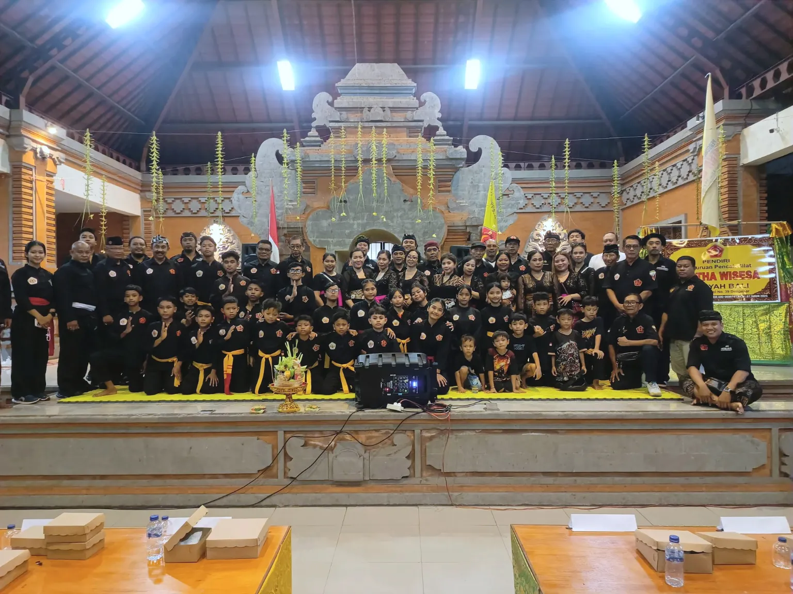
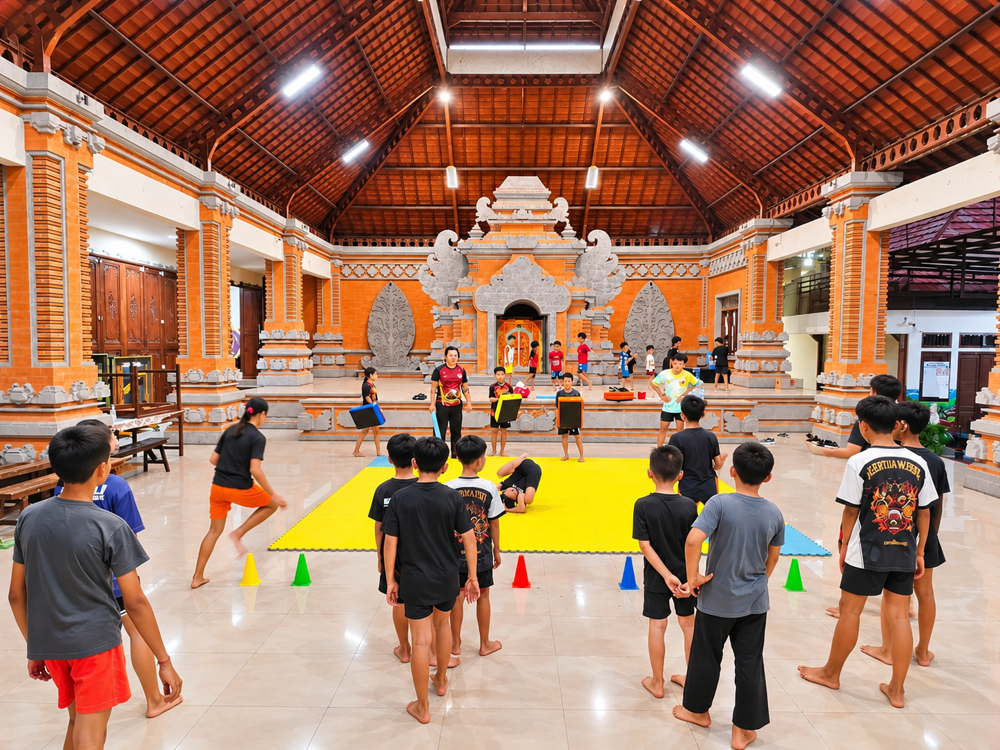
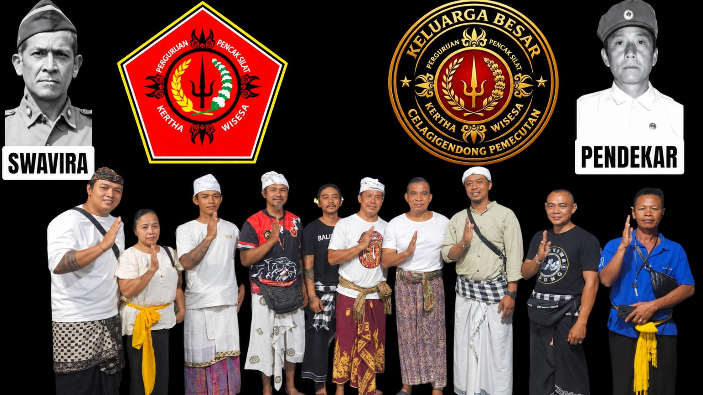
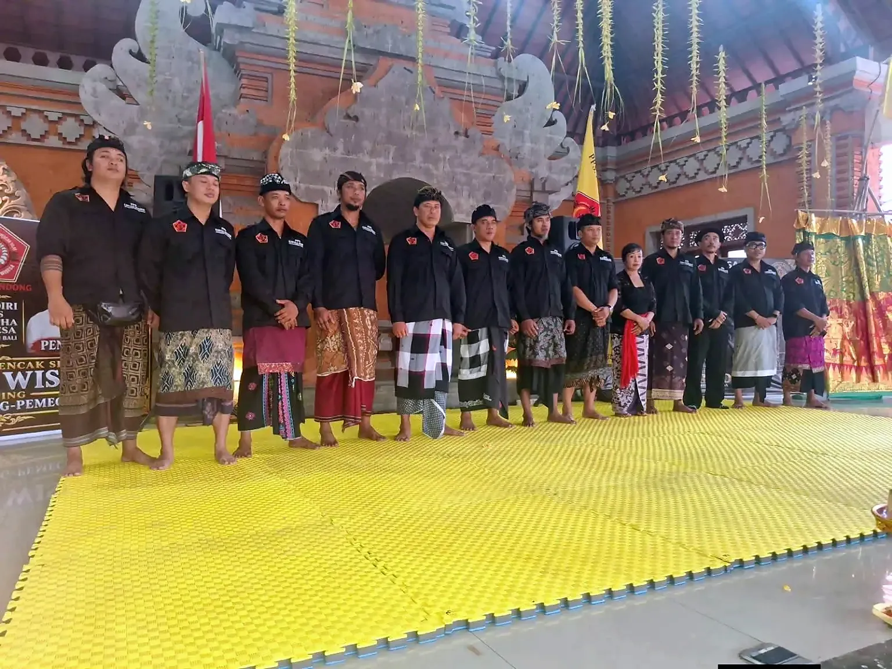
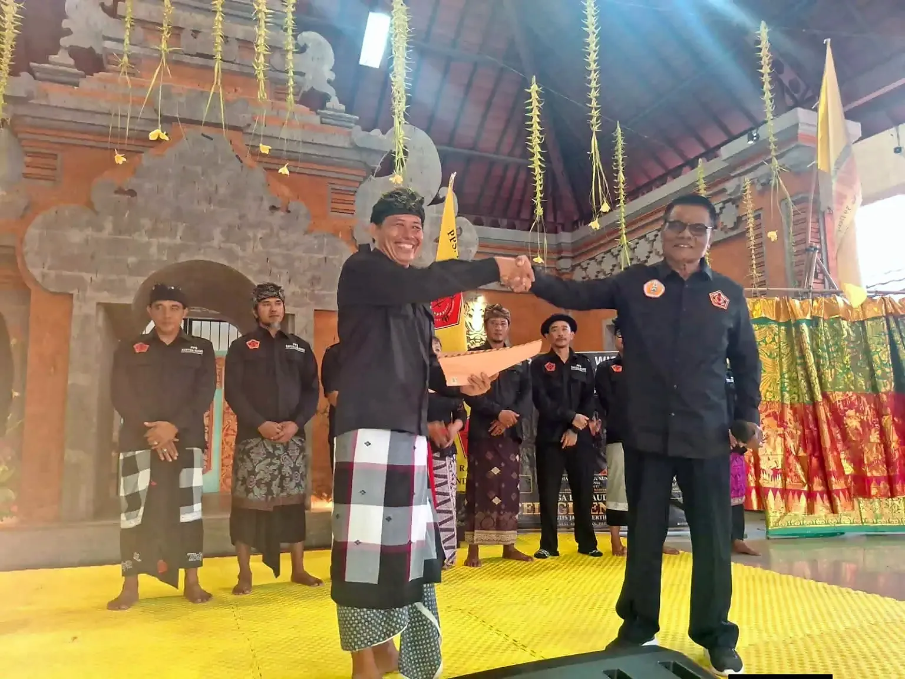
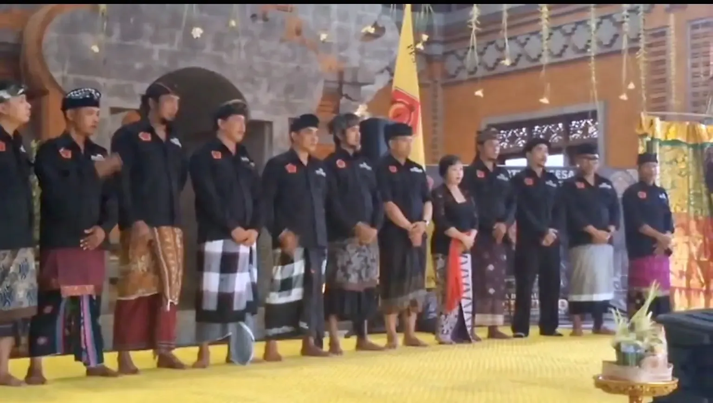
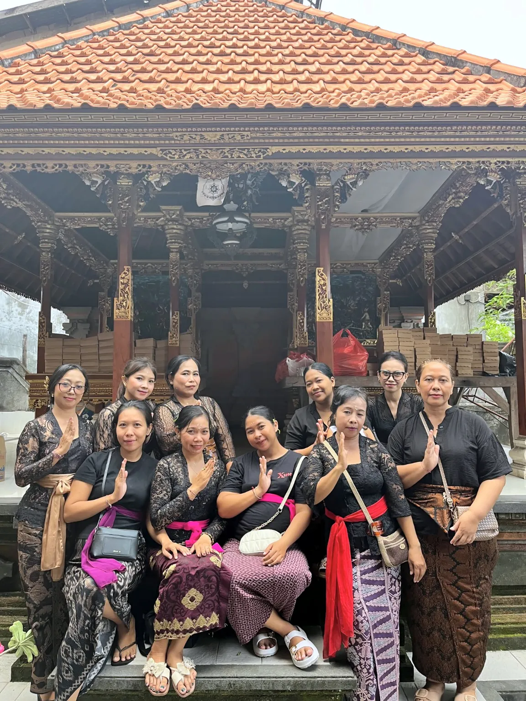
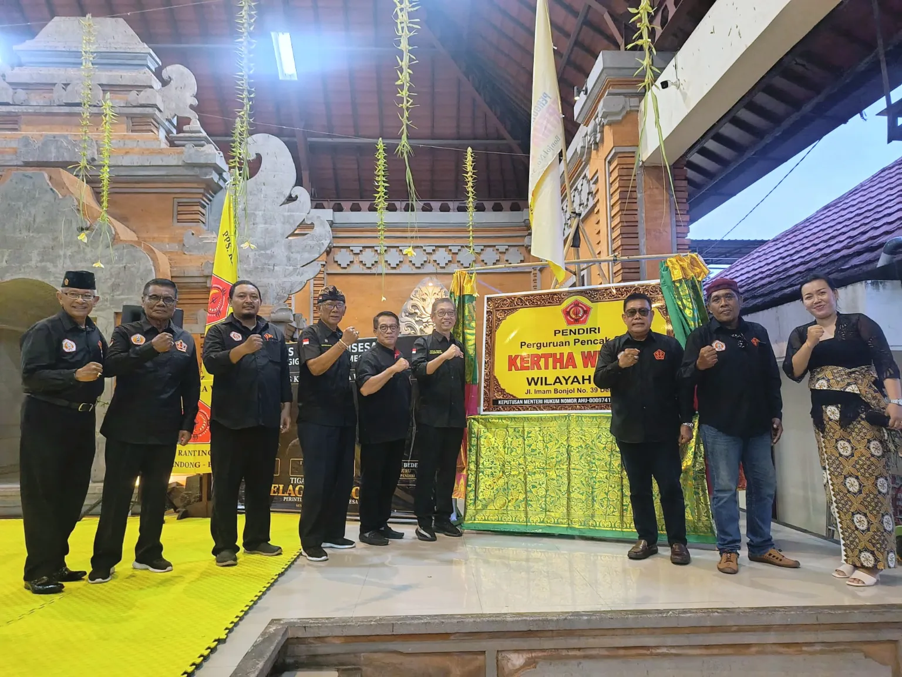
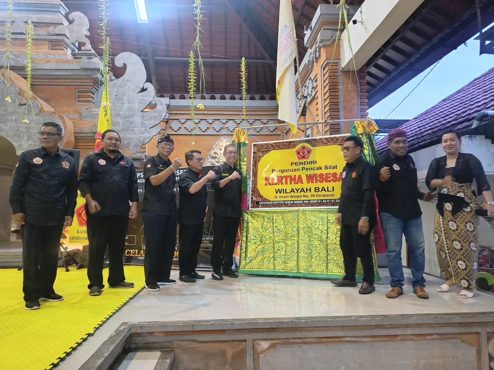
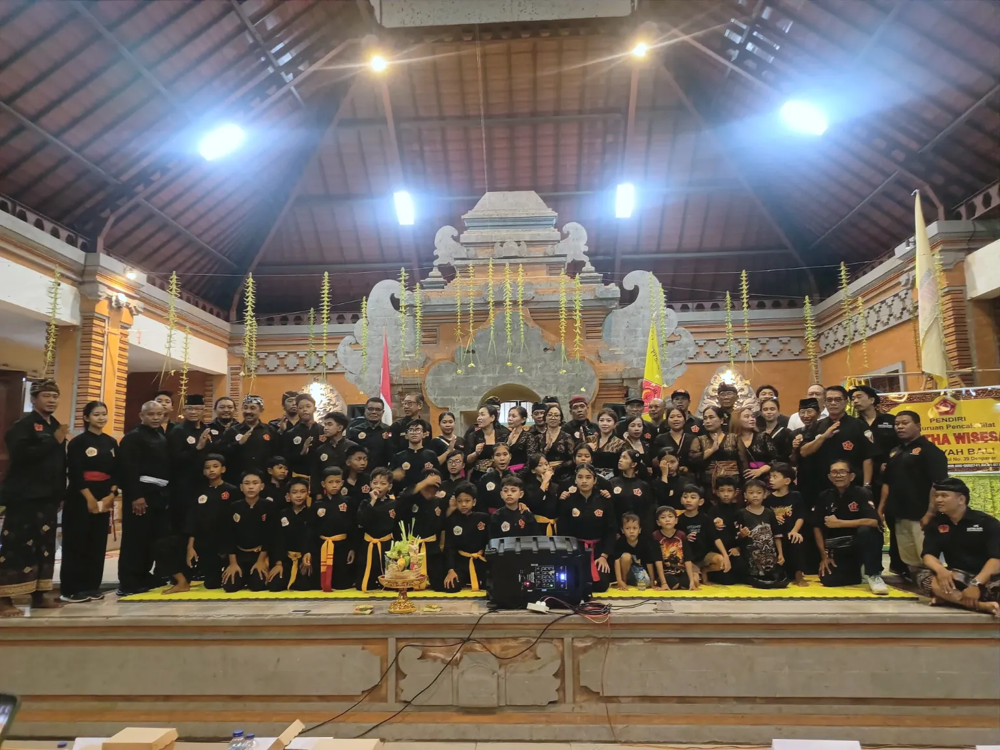

Pelantikan Pengurus Celagigendong
Dokumentasi pelantikan PPS Kertha Wisesa Celagigendong - Pemecutan, bersama pengurus dan generasi penerus.
8 foto dokumentasiLihat album →DOKUMENTASI · CELAGIGENDONG, BALI
Ruang dokumentasi kegiatan PPS Kertha Wisesa: latihan, pembinaan generasi penerus, kerohanian, rapat koordinasi, serta prestasi. Setiap kegiatan disusun menurut jenisnya agar mudah ditemukan.

Dokumentasi pelantikan PPS Kertha Wisesa Celagigendong - Pemecutan, bersama pengurus dan generasi penerus.
8 foto dokumentasiLihat album →
Dokumentasi latihan pencak silat di Banjar Celagigendong, Pemecutan, Denpasar.
Dokumentasi asli latihan rutin · Banjar CelagigendongProses belajar, pengembangan karakter, kedisiplinan, dan kebersamaan para pesilat muda.
Album pembinaan
Dokumentasi kegiatan spiritual, termasuk Matur Piuning di merajan dan Banjar Celagigendong pada 25 Oktober 2026.
Dokumentasi asli · 25 Oktober 2026Lihat dokumentasi →Dokumentasi pertemuan permohonan izin dan persiapan pelantikan pengurus PPS Kertha Wisesa Celagigendong. Tanggal pertemuan masih menunggu konfirmasi.
Dokumentasi kegiatan organisasiDokumentasi keikutsertaan dan prestasi atlet yang afiliasinya dengan Kertha Wisesa telah terkonfirmasi.
Arsip prestasi terverifikasiDOKUMENTASI PELANTIKAN
Dokumentasi kebersamaan pengurus, anggota, dan generasi penerus perguruan. Ketuk foto untuk membukanya dalam ukuran penuh.







Dokumentasi Kegiatan · 25 Oktober 2026
PPS Kertha Wisesa Celagigendong · Pusat sejarah dan tempat lahir perguruan
Pada Minggu, 25 Oktober 2026, keluarga besar PPS Kertha Wisesa Celagigendong melaksanakan Matur Piuning di merajan dan Banjar Celagigendong, Bali.
Kegiatan ini menjadi ungkapan bhakti dan penghormatan kepada leluhur serta permohonan tuntunan dan kelancaran dalam meneruskan tradisi perguruan.
Seni · Prestasi · Kerohanian